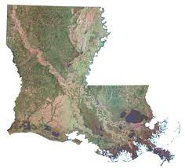

Louisiana
Ethan Sloan
I. A Brief Introduction

Louisiana is a state located in the Southern United States, bordering Arkansas to the north, Texas to the west, Mississippi to the east (divided by the Mississippi River), and the Gulf of Mexico to the south. A map of Louisiana is shown above. Louisiana is known for its unique culture, which is distinct in the United States due in large part to its mix of cultures from French, Spanish, and African American communities and its geography, flora, and fauna. On this web page, you will find basic information about the history and culture of Louisiana, with a focus on Louisiana's Francophone past and present. Please note that Louisiana is a state that has an extremely rich history and culture that goes far beyond the scope of this site and past its French influences. The sources for this page, which will be listed, will be primarily other short, web-based sources, and will thus not be an extremely robust look at Louisiana. I believe that reading books by authors who are experts in their fields is the best way to learn about a topic. If you know of any good books on Louisiana, I would love to hear them.
II. History of Louisiana
Before European settlement in Louisiana, there were numerous American Indian groups that inhabited the region for thousands of years. By the time of European settlements, there were around 16 known American Indian groups in the region. These societies varied in their beliefs, practices, and histories. Most famously, some native societies in Louisiana and the Mississippi region built mound structures.
The first known European contact with Louisiana was in 1519 by the Spanish, although they did not claim the land on their voyages. The Spanish would later lay claim to the region, but the first Europeans to do so were the French, who took claim of Louisiana in 1682. Louisiana was desirable to the French, who wanted a water connection between the great lakes (Quebec) and the Gulf of Mexico. French expeditions through the Mississippi began in the 1670s before French explorers claimed Louisiana, naming it after King Louis XIV. Louisiana became more important to the French in the late 1600s and the early 1700s to combat, in a way, other European colonial powers in North America. Politics in Europe (notably the War of Spanish Succession) occupied France's needs in the early 1700s, which meant that Louisiana was not a priority and therefore did not have the means to operate as a typical European colony in North America. As a consequence, Louisiana relied heavily on slavery in order to meet the material needs of the colonists (an important part of Louisiana's history, for African Americans are a prominent cultural group in Louisiana). Louisiana eventually became an economically viable colony for the fur trade, which made the colony grow in both settlers and especially in slaves. The catholic church also got heavily involved in French Louisiana in the mid-1700s, establishing missions for the American Indian groups of the area. Competition eventually gave French Louisiana economic difficulties, and the colony started having conflicts with American Indians. Eventually, the French ceded the colony to Spain, which would own the Louisiana colony from 1763 to 1803. By the time Spain took over, Louisianans who had not been born in Europe were becoming a distinct culture (creole). The Spanish rule of the colony saw conflict and an even greater increase in the slave trade. The Spanish gave the colony back to France in 1803, and in the same year, France sold the area to the United States in the Louisiana Purchase. Louisiana became a defined United States Territory in 1804 and was admitted as a U.S. state in 1812. Louisiana would play an important place in American trade, being where the Mississippi River meets the Gulf of Mexico. The state, with its diverse history and background, also became a cultural powerhouse of the United States, being the birthplace of music genres like jazz, popular foods and cooking techniques, and other unique cultural developments of the United States.
III. Some Culture Practices
Louisiana, and especially its largest city, New Orleans, is known for its very unique culture, as mentioned before. Louisianans of African descent (either descendants of slavery or from the Caribbean) practiced adapted versions of traditional African and Caribbean practices. Haitians brought the religion "voodoo" that is associated with Louisiana, and recipes with vegetables like okra, which are characteristic of Louisiana cuisine, were adapted from West African recipes. On the topic of food, Louisiana's geography and characteristic wildlife have made Louisianan food distinct and popular. As mentioned before, jazz is a popular form of music that originated in New Orleans. Jazz played an important historical role of bringing Louisiana's large number of ethnic groups together.
IV. Louisiana's Modern-Day Relationship to French
Being part of the U.S., Louisiana has a good relationship with France in the modern-day; however, as one may expect from its history of being a French colony and its prominent French-inspired culture, Louisiana's relationship with France and the French language goes deeper than most parts of the United States. The French language was often discouraged in Louisiana. Like in Quebec, French-speaking Americans were often seen as lower-class and undesirable historically. French even became prohibited in Louisiana public schools in the 1920s. In 1968, the Council for the Development of French in Louisiana was formed, which brought back interest and celebration of the French language and culture in Louisiana that has continued to the present day. In 2018, Louisiana submitted an application to the International Organization of La Francophonie (OIF), having participated as a guest in OIF summits. Its application was accepted in the same year.
V. Cultural Places and Events
The city of New Orleans and its historic French Quarter have very important and popular cultural sites. While a lot of historical neighborhoods have been torn down, there one can still experience some unique cultural experiences. Perhaps the most popular cultural event in Louisiana and New Orleans is Mardi Gras, a grand and colorful festival that has its roots in medieval Europe. Mardi Gras became popular in Louisiana from its French history with the House of the Bourbons.
VI. Thoughts on Francophonie
The concept of Le Francophonie attempts to bring the French language back to its "former glory" of importance and bring Francophone nations together. The concept of bringing people together with language is somewhat compelling, for language and good communication are powerful ways of bringing people together and understanding others. That being said, the modern concept of Le Francophonie as championed by President Macron feels a bit backward in its way of going about the concept. As one of the articles mentioned, the plan is very Paris-centric and feels like another way for France to implement neo-colonial practices in France's former colonies. Macron's view of French as a "binding language" makes some amount of sense, but I'm not sure that it is necessarily as virtuous as he makes it out to be. As we explored in the last culture project, languages are often culturally important to people, and putting French above other languages may have consequences of diminishing cultural camaraderie among people in other nations. Furthermore, I think that French is a bit past its ability to be a "binding language" as it once was. English has taken its place as the "Lingua Franca," so trying to promote French to re-take this role makes it seem like there are intentional alternative motives.
VII. Sources
1. “American Indians: The First Families of Louisiana on the Eve of French Settlement.” Native Americans, Louisiana Department of Culture Recreation and Tourism, 2018, https://www.crt.state.la.us/louisiana-state-museum/online-exhibits/the-cabildo/american-indians/index.
2. “Early European Explorers.” National Parks Service, U.S. Department of the Interior, 26 Jan. 2022, https://www.nps.gov/jela/learn/historyculture/early-european-explorers.htm.
3. Pasquier, Michael T. “French Colonial Louisiana.” 64 Parishes, 64 Parishes, 22 Feb. 2022, https://64parishes.org/entry/french-colonial-louisiana.
4. Chamberlain, Charles. “Spanish Colonial Louisiana.” 64 Parishes, 64 Parishes, 3 Oct. 2022, https://64parishes.org/entry/spanish-colonial-louisiana.
“Important Dates in History.” Important Dates in History - the Official Website of Louisiana, Louisiana.gov, https://www.louisiana.gov/about-louisiana/important-dates-in-history/.
Owens, Maida. “Louisiana's Traditional Cultures: An Overview.” Louisiana's Traditional Cultures: An Overview, Folklife in Louisiana, 1997, https://www.louisianafolklife.org/lt/maidas_essay/main_introduction_onepage.html.
“France and Louisiana: ‘A Special Relationship?".” Institut Des Amériques, Institut Des Amériques, 31 Dec. 2021, https://www.institutdesameriques.fr/en/calendar/france-and-louisiana-special-relationship.
Thiery, Clément, et al. “Louisiana Applies to Be Part of La Francophonie.” France, France-Amerique, 2 Dec. 2022, https://france-amerique.com/louisiana-applies-to-be-part-of-la-francophonie/.
“Mardi Gras History.” Mardi Gras New Orleans, Mardi Gras New Orleans, https://www.mardigrasneworleans.com/history/.